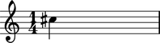

Notehead token input
Abjad Note and Chord instances accept both pitch token instances and Abjad _NoteHead instances as input.
For example:
abjad> note = Note(0, (1, 4)) abjad> note.notehead = 13
Abjad groups pitch token instances and Abjad _NoteHead instances together under the heading of notehead token input.
Examples in the documentation that ask for notehead token input accept any of the input types shown here.